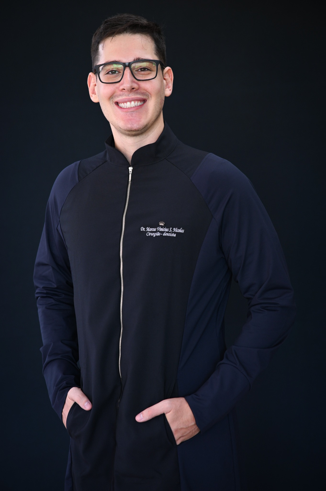

Atendimento clínico
Avaliação, diagnóstico, planejamento e acompanhamento odontológico na rotina assistencial.
Atuação clínica e cirúrgica ambulatorial, com formação complementar voltada à segurança do paciente, manejo de pacientes sistemicamente comprometidos e interesse em Cirurgia e Traumatologia Bucomaxilofacial.

Cirurgião-dentista graduado pelo Centro Universitário das Faculdades Associadas de Ensino — UNIFAE, com experiência em atendimento odontológico clínico, procedimentos cirúrgicos ambulatoriais, promoção e prevenção em saúde bucal e acompanhamento de pacientes na Atenção Primária à Saúde.
Mantém formação complementar voltada ao manejo odontológico de pacientes de maior complexidade, segurança assistencial, suporte básico de vida e prática clínica baseada em atualização científica.
Cirurgia e Traumatologia Bucomaxilofacial é apresentada neste site como área de interesse e objetivo de formação, não como especialidade concluída.
Experiência profissional como cirurgião-dentista na Estratégia Saúde da Família, com foco em assistência clínica, procedimentos ambulatoriais e promoção de saúde.
Avaliação, diagnóstico, planejamento e acompanhamento odontológico na rotina assistencial.
Experiência com procedimentos cirúrgicos odontológicos compatíveis com a prática ambulatorial.
Atendimento e condução inicial de demandas espontâneas e situações odontológicas agudas.
Ações de educação em saúde bucal, prevenção de agravos e orientação individual e coletiva.
Centro Universitário das Faculdades Associadas de Ensino — UNIFAE.
Cirurgião-DentistaCurso EAD autoinstrucional.
Curso EAD autoinstrucional.
Formação complementar em segurança assistencial no contexto cirúrgico.
Formação complementar em reconhecimento e resposta inicial a emergências.
Trabalho apresentado ao Curso de Graduação em Odontologia da UNIFAE em 2024, sob orientação do Prof. Me. Cristiano Elias Figueiredo.
O estudo descreve diagnóstico clínico e imaginológico, planejamento e tratamento cirúrgico de dens in dente tipo III associado a dente supranumerário, com acompanhamento pós-operatório.
Produção acadêmica relacionada ao diagnóstico diferencial e abordagem de uma anomalia dentária em região anterior de maxila.
Acessar publicaçãoEnquanto os canais profissionais dedicados são preparados, o contato público disponível neste site é o LinkedIn.